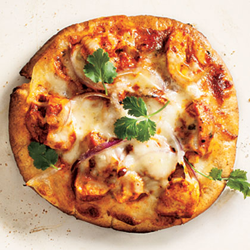

Pizza

Description
The recipe is very simple just follow along and you will have made a delicous homemade pizza in to time!
P.S pineapple deserves to go on pizza if you object why not try it out yourself?
Ingredients
- 12 ounces skinless, boneless chicken breast halves
- ¼ cup plain low-fat yogurt
- 2 teaspoons garam masala, divided
- Cooking spray
- .63 teaspoon kosher salt, divided
- 1 (14.5-ounce) can unsalted diced tomatoes, drained
- 1 tablespoon olive oil
- 1 teaspoon grated peeled fresh ginger
- ¼ teaspoon ground red pepper
- 3 garlic cloves, minced
- 2 tablespoons heavy whipping cream
- 4 (6-inch) whole-wheat pitas
- ⅓ cup thinly vertically sliced red onion
- 3 ounces part-skim mozzarella cheese, shredded (about 3/4 cup)
- 2 tablespoons fresh cilantro leaves
- Green Salad with Simple Vinaigrette
Steps
- Preheat boiler to high
- Cut chicken in half horizontally. Combine chicken, yogurt, and 1/2 teaspoon garam masala. Place on a foil-lined baking sheet coated with cooking spray; sprinkle with 1/8 teaspoon salt. Broil 5 minutes on each side.
- Heat a skillet over medium-high heat. Place tomatoes in a mini chopper; pulse until almost smooth. Add oil to pan. Add 1 1/2 teaspoons garam masala, ginger, red pepper, and garlic; cook 1 minute. Stir in tomatoes; simmer 4 minutes. Stir in 1/2 teaspoon salt and cream; cook 1 minute. Cut chicken into pieces. Add chicken to pan; toss.
- Place pitas on baking sheet. Broil 1 minute each side. Spoon 1/2 cup chicken onto each. Top with onion and cheese. Broil 2 minutes. Sprinkle with cilantro.